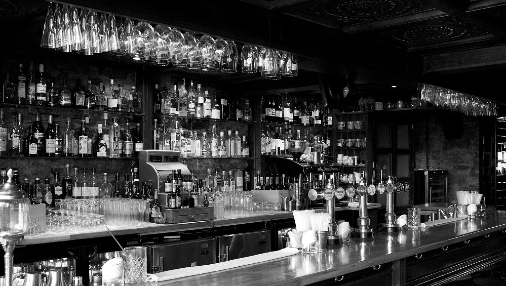
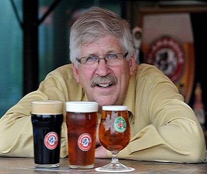
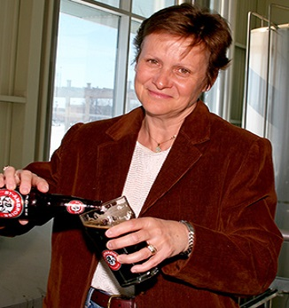

McAulsan's Story

Peter McAuslan revealed his first official beer during February 1989 (McAuslan). The drinks were brewed at 4850 St-Ambroise Street in Montreal’s St-Henri District. He had been brewing beer for over 25 years beforehand, but it didn't go into commercial until the ‘80s. Other notable ‘brewmasters’ include Alan Pugsley and Ellen Bounsall. With great teamwork, the staff lead the company to win 12 medals in international competitions. Pale Ale was the first and an amazing kick start for the brand. Soon after that, McAuslan Brewing became the first brewery to offer its product in bottles. Beyond that, McAuslan had slowly but surely expanded it’s horizons with many other beers like St-Ambroise Oatmeal Stout; the Griffon brands, Griffon Extra Pale Ale and Griffon Brown Ale, Frontenac and a family of seasonal beers like Apricot Wheat Ale, Raspberry Ale, Spiced Pumpkin Ale and Strong Ale.


Peter McAuslan revealed his first official beer during February 1989 (McAuslan). The drinks were brewed at 4850 St-Ambroise Street in Montreal’s St-Henri District. He had been brewing beer for over 25 years beforehand, but it didn't go into commercial until the ‘80s. Other notable ‘brewmasters’ include Alan Pugsley and Ellen Bounsall. With great teamwork, the staff lead the company to win 12 medals in international competitions. Pale Ale was the first and an amazing kick start for the brand. Soon after that, McAuslan Brewing became the first brewery to offer its product in bottles. Beyond that, McAuslan had slowly but surely expanded it’s horizons with many other beers like St-Ambroise Oatmeal Stout; the Griffon brands, Griffon Extra Pale Ale and Griffon Brown Ale, Frontenac and a family of seasonal beers like Apricot Wheat Ale, Raspberry Ale, Spiced Pumpkin Ale and Strong Ale.